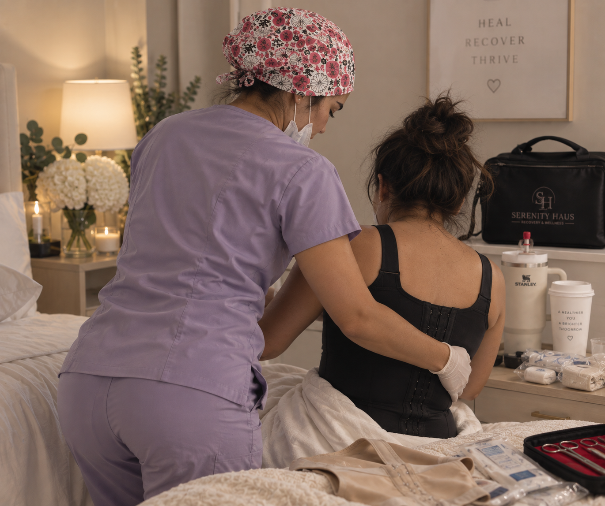
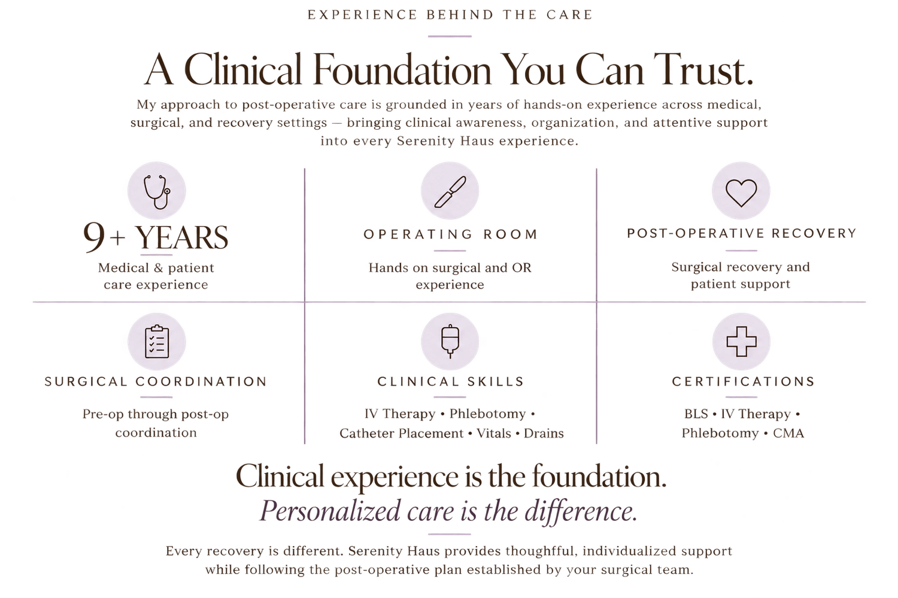
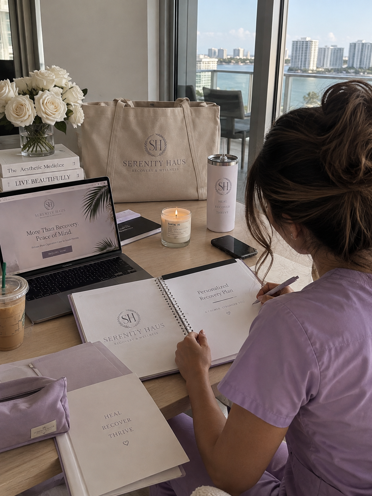

Three services that can be booked alone or combined. Every plan follows your surgeon's post-operative instructions and happens wherever you are recovering.
Transport from the surgical facility, settling you safely at home, positioning, garment and dressing support, vital-sign observation, medication schedule assistance, hydration, nutrition and mobility help, with concerns communicated per your surgeon's instructions.
Continuous one to one support through the evening and overnight after surgery: comfort and positioning, scheduled observations, medication reminders, drain assistance, ambulation, hydration, nutrition and garment support, then preparation for the following morning.
Flexible daytime, evening or additional overnight visits beyond the first 24 hours, customized around your procedure, mobility, support system and your surgeon's post-operative plan.
A supported transition from the surgical facility to home, so the first hours are calm and correctly handled.


Dedicated support through the first night after surgery, when instructions matter most and sleep is hardest.
Continued support beyond the first 24 hours for patients who would benefit from more hands in the days after surgery.

Yes. Many patients have a family member handle the ride home and want professional support for the first night instead.
Yes. Additional overnights are booked through Extended Recovery Care based on availability.
Transport for follow-up visits can be arranged as part of an extended care plan. Mention it when you request availability.
Tell us your procedure date and city. We will confirm availability and build a recovery plan around your surgeon's instructions.
Request availability